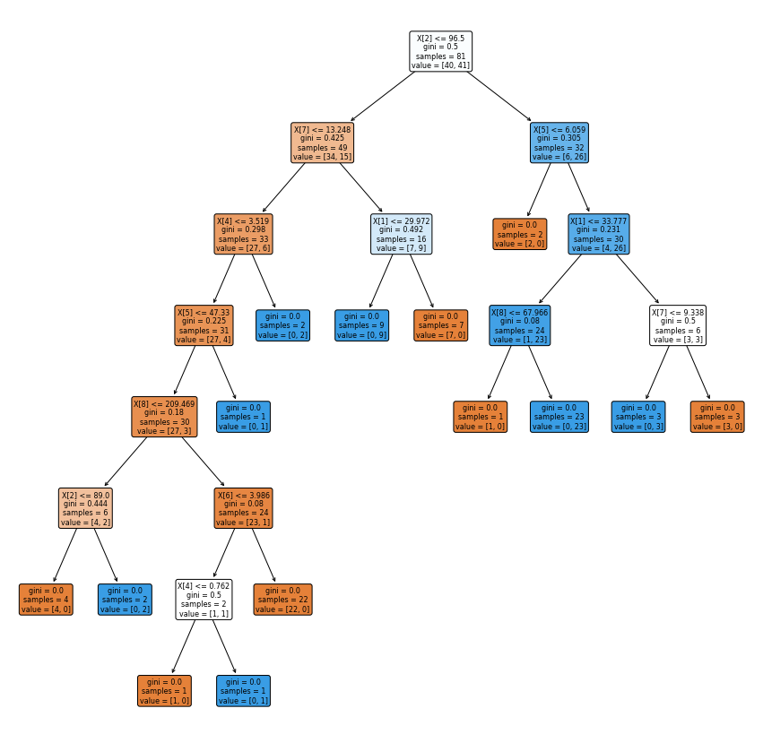

UTS#
KNN#
Import Library#
import pandas as pd
from sklearn.model_selection import train_test_split
from sklearn.neighbors import KNeighborsClassifier
Mengambil Dataset#
df = pd.read_csv("https://raw.githubusercontent.com/ArbilShofiyurrahman/datamining/main/BreastCancerCoimbraDataSet.csv")
df.head()
---------------------------------------------------------------------------
HTTPError Traceback (most recent call last)
<ipython-input-2-0385c8c33c3c> in <cell line: 1>()
----> 1 df = pd.read_csv("https://raw.githubusercontent.com/ArbilShofiyurrahman/datamining/main/BreastCancerCoimbraDataSet.csv")
2 df.head()
/usr/local/lib/python3.10/dist-packages/pandas/util/_decorators.py in wrapper(*args, **kwargs)
209 else:
210 kwargs[new_arg_name] = new_arg_value
--> 211 return func(*args, **kwargs)
212
213 return cast(F, wrapper)
/usr/local/lib/python3.10/dist-packages/pandas/util/_decorators.py in wrapper(*args, **kwargs)
329 stacklevel=find_stack_level(),
330 )
--> 331 return func(*args, **kwargs)
332
333 # error: "Callable[[VarArg(Any), KwArg(Any)], Any]" has no
/usr/local/lib/python3.10/dist-packages/pandas/io/parsers/readers.py in read_csv(filepath_or_buffer, sep, delimiter, header, names, index_col, usecols, squeeze, prefix, mangle_dupe_cols, dtype, engine, converters, true_values, false_values, skipinitialspace, skiprows, skipfooter, nrows, na_values, keep_default_na, na_filter, verbose, skip_blank_lines, parse_dates, infer_datetime_format, keep_date_col, date_parser, dayfirst, cache_dates, iterator, chunksize, compression, thousands, decimal, lineterminator, quotechar, quoting, doublequote, escapechar, comment, encoding, encoding_errors, dialect, error_bad_lines, warn_bad_lines, on_bad_lines, delim_whitespace, low_memory, memory_map, float_precision, storage_options)
948 kwds.update(kwds_defaults)
949
--> 950 return _read(filepath_or_buffer, kwds)
951
952
/usr/local/lib/python3.10/dist-packages/pandas/io/parsers/readers.py in _read(filepath_or_buffer, kwds)
603
604 # Create the parser.
--> 605 parser = TextFileReader(filepath_or_buffer, **kwds)
606
607 if chunksize or iterator:
/usr/local/lib/python3.10/dist-packages/pandas/io/parsers/readers.py in __init__(self, f, engine, **kwds)
1440
1441 self.handles: IOHandles | None = None
-> 1442 self._engine = self._make_engine(f, self.engine)
1443
1444 def close(self) -> None:
/usr/local/lib/python3.10/dist-packages/pandas/io/parsers/readers.py in _make_engine(self, f, engine)
1733 if "b" not in mode:
1734 mode += "b"
-> 1735 self.handles = get_handle(
1736 f,
1737 mode,
/usr/local/lib/python3.10/dist-packages/pandas/io/common.py in get_handle(path_or_buf, mode, encoding, compression, memory_map, is_text, errors, storage_options)
711
712 # open URLs
--> 713 ioargs = _get_filepath_or_buffer(
714 path_or_buf,
715 encoding=encoding,
/usr/local/lib/python3.10/dist-packages/pandas/io/common.py in _get_filepath_or_buffer(filepath_or_buffer, encoding, compression, mode, storage_options)
361 # assuming storage_options is to be interpreted as headers
362 req_info = urllib.request.Request(filepath_or_buffer, headers=storage_options)
--> 363 with urlopen(req_info) as req:
364 content_encoding = req.headers.get("Content-Encoding", None)
365 if content_encoding == "gzip":
/usr/local/lib/python3.10/dist-packages/pandas/io/common.py in urlopen(*args, **kwargs)
263 import urllib.request
264
--> 265 return urllib.request.urlopen(*args, **kwargs)
266
267
/usr/lib/python3.10/urllib/request.py in urlopen(url, data, timeout, cafile, capath, cadefault, context)
214 else:
215 opener = _opener
--> 216 return opener.open(url, data, timeout)
217
218 def install_opener(opener):
/usr/lib/python3.10/urllib/request.py in open(self, fullurl, data, timeout)
523 for processor in self.process_response.get(protocol, []):
524 meth = getattr(processor, meth_name)
--> 525 response = meth(req, response)
526
527 return response
/usr/lib/python3.10/urllib/request.py in http_response(self, request, response)
632 # request was successfully received, understood, and accepted.
633 if not (200 <= code < 300):
--> 634 response = self.parent.error(
635 'http', request, response, code, msg, hdrs)
636
/usr/lib/python3.10/urllib/request.py in error(self, proto, *args)
561 if http_err:
562 args = (dict, 'default', 'http_error_default') + orig_args
--> 563 return self._call_chain(*args)
564
565 # XXX probably also want an abstract factory that knows when it makes
/usr/lib/python3.10/urllib/request.py in _call_chain(self, chain, kind, meth_name, *args)
494 for handler in handlers:
495 func = getattr(handler, meth_name)
--> 496 result = func(*args)
497 if result is not None:
498 return result
/usr/lib/python3.10/urllib/request.py in http_error_default(self, req, fp, code, msg, hdrs)
641 class HTTPDefaultErrorHandler(BaseHandler):
642 def http_error_default(self, req, fp, code, msg, hdrs):
--> 643 raise HTTPError(req.full_url, code, msg, hdrs, fp)
644
645 class HTTPRedirectHandler(BaseHandler):
HTTPError: HTTP Error 404: Not Found
Melihat ukuran dataset#
df.shape
(116, 10)
Membagi data ke X dan y#
# X tanpa label
X = df.drop(columns=["Classification"])
X.head()
| Age | BMI | Glucose | Insulin | HOMA | Leptin | Adiponectin | Resistin | MCP.1 | |
|---|---|---|---|---|---|---|---|---|---|
| 0 | 48 | 23.500000 | 70 | 2.707 | 0.467409 | 8.8071 | 9.702400 | 7.99585 | 417.114 |
| 1 | 83 | 20.690495 | 92 | 3.115 | 0.706897 | 8.8438 | 5.429285 | 4.06405 | 468.786 |
| 2 | 82 | 23.124670 | 91 | 4.498 | 1.009651 | 17.9393 | 22.432040 | 9.27715 | 554.697 |
| 3 | 68 | 21.367521 | 77 | 3.226 | 0.612725 | 9.8827 | 7.169560 | 12.76600 | 928.220 |
| 4 | 86 | 21.111111 | 92 | 3.549 | 0.805386 | 6.6994 | 4.819240 | 10.57635 | 773.920 |
#y labelnya saja
y = df["Classification"].values
y[0:116]
array([1, 1, 1, 1, 1, 1, 1, 1, 1, 1, 1, 1, 1, 1, 1, 1, 1, 1, 1, 1, 1, 1,
1, 1, 1, 1, 1, 1, 1, 1, 1, 1, 1, 1, 1, 1, 1, 1, 1, 1, 1, 1, 1, 1,
1, 1, 1, 1, 1, 1, 1, 1, 2, 2, 2, 2, 2, 2, 2, 2, 2, 2, 2, 2, 2, 2,
2, 2, 2, 2, 2, 2, 2, 2, 2, 2, 2, 2, 2, 2, 2, 2, 2, 2, 2, 2, 2, 2,
2, 2, 2, 2, 2, 2, 2, 2, 2, 2, 2, 2, 2, 2, 2, 2, 2, 2, 2, 2, 2, 2,
2, 2, 2, 2, 2, 2])
Membagi Data Ke data test dan data training#
X_train, X_test, y_train, y_test = train_test_split(X, y, test_size=0.20, random_state=0, stratify=y)
#Feature Scaling
from sklearn.preprocessing import StandardScaler
sc = StandardScaler()
X_train = sc.fit_transform(X_train)
X_test = sc.transform(X_test)
X_train[:5]
array([[-1.99870762e-01, 1.77497398e+00, 1.11147412e+00,
2.42579535e-01, 2.63712046e-01, 3.32084933e+00,
-3.53601251e-01, -7.98401203e-01, -8.96813736e-01],
[-2.61575829e-01, 1.92667044e+00, 2.16240100e-01,
6.71901217e-02, 2.71926419e-03, 5.62315407e-02,
1.30573410e+00, -3.89670515e-01, 4.67707681e-01],
[ 9.10820452e-01, -3.68794536e-01, -7.28729138e-01,
-6.76319466e-01, -5.30791475e-01, -6.07166943e-02,
3.19975082e+00, -9.39015325e-01, -3.99043511e-01],
[-3.84985964e-01, -1.69222255e+00, -1.81641684e-01,
-5.20238052e-01, -4.13823515e-01, -7.90474522e-01,
-6.57635110e-01, -7.58294756e-01, -1.26169663e+00],
[-1.18715184e+00, -8.29930211e-01, -1.07687570e+00,
-3.76893851e-01, -3.95202370e-01, -5.70764749e-01,
1.01859454e+00, -4.61398643e-01, -1.04901974e+00]])
Membangun knn Classifier#
knn = KNeighborsClassifier(n_neighbors = 5,metric = 'minkowski', p = 2)
knn.fit(X_train,y_train)
KNeighborsClassifier()
knn.predict(X_test)[0:5]
array([2, 2, 1, 2, 1])
#check accuracy of our model on the test data
knn.score(X_test, y_test)
0.9166666666666666
Hasil Akurasi#
from sklearn.metrics import *
import numpy as np
#Check Accuracy precision, recall, f1-score
print( classification_report(y_test, knn.predict(X_test)) )
#Another way to get the models accuracy on the test data
print(F'Accuracy:',accuracy_score(y_test, knn.predict(X_test)))
print(F'Precision:', precision_score(y_test, knn.predict(X_test)))
print(F'Recall:', recall_score(y_test, knn.predict(X_test)))
print(F'F1 Score:', f1_score(y_test, knn.predict(X_test)))
#Check Roc Auc Score
print( F'Roc Auc Score:',roc_auc_score(y_test, knn.predict(X_test)) )
print( F'Balanced Accuracy Score:',balanced_accuracy_score(y_test, knn.predict(X_test)) )
print( F'Confusion Matrix:',confusion_matrix(y_test, knn.predict(X_test)) )
print()#Print a new line
precision recall f1-score support
1 0.91 0.91 0.91 11
2 0.92 0.92 0.92 13
accuracy 0.92 24
macro avg 0.92 0.92 0.92 24
weighted avg 0.92 0.92 0.92 24
Accuracy: 0.9166666666666666
Precision: 0.9090909090909091
Recall: 0.9090909090909091
F1 Score: 0.9090909090909091
Roc Auc Score: 0.9160839160839161
Balanced Accuracy Score: 0.916083916083916
Confusion Matrix: [[10 1]
[ 1 12]]
Decision Tree#
Import Modul#
import pandas as pd
from sklearn import tree
from matplotlib import pyplot as plt
from sklearn.tree import DecisionTreeClassifier
from sklearn import metrics
Mengambil Data#
df=pd.read_csv("https://raw.githubusercontent.com/FajarFatha/datamining/main/BreastCancerCoimbraDataSet.csv")
df
| Age | BMI | Glucose | Insulin | HOMA | Leptin | Adiponectin | Resistin | MCP.1 | Classification | |
|---|---|---|---|---|---|---|---|---|---|---|
| 0 | 48 | 23.500000 | 70 | 2.707 | 0.467409 | 8.8071 | 9.702400 | 7.99585 | 417.114 | 1 |
| 1 | 83 | 20.690495 | 92 | 3.115 | 0.706897 | 8.8438 | 5.429285 | 4.06405 | 468.786 | 1 |
| 2 | 82 | 23.124670 | 91 | 4.498 | 1.009651 | 17.9393 | 22.432040 | 9.27715 | 554.697 | 1 |
| 3 | 68 | 21.367521 | 77 | 3.226 | 0.612725 | 9.8827 | 7.169560 | 12.76600 | 928.220 | 1 |
| 4 | 86 | 21.111111 | 92 | 3.549 | 0.805386 | 6.6994 | 4.819240 | 10.57635 | 773.920 | 1 |
| ... | ... | ... | ... | ... | ... | ... | ... | ... | ... | ... |
| 111 | 45 | 26.850000 | 92 | 3.330 | 0.755688 | 54.6800 | 12.100000 | 10.96000 | 268.230 | 2 |
| 112 | 62 | 26.840000 | 100 | 4.530 | 1.117400 | 12.4500 | 21.420000 | 7.32000 | 330.160 | 2 |
| 113 | 65 | 32.050000 | 97 | 5.730 | 1.370998 | 61.4800 | 22.540000 | 10.33000 | 314.050 | 2 |
| 114 | 72 | 25.590000 | 82 | 2.820 | 0.570392 | 24.9600 | 33.750000 | 3.27000 | 392.460 | 2 |
| 115 | 86 | 27.180000 | 138 | 19.910 | 6.777364 | 90.2800 | 14.110000 | 4.35000 | 90.090 | 2 |
116 rows × 10 columns
y = df["Classification"]
X = df.drop(columns=["Classification"])
Split data#
X_train, X_test, y_train, y_test = train_test_split(X, y, test_size=0.3, random_state=1) # 70% training and 30% test
Membangun Model Decision Tree#
# membangun decision tree menggunakan gini
clf = DecisionTreeClassifier(criterion="gini")
clf = clf.fit(X_train,y_train)
#Prediksi data test
y_pred = clf.predict(X_test)
Akurasi#
print("Accuracy:",metrics.accuracy_score(y_test, y_pred))
Accuracy: 0.7714285714285715
Visualisasi Decision Tree#
plt.figure(figsize=(15,15))
#create the tree plot
a = tree.plot_tree(clf,
rounded = True,
filled = True,
fontsize=8)
#show the plot
plt.show()
